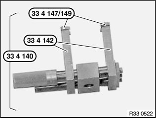
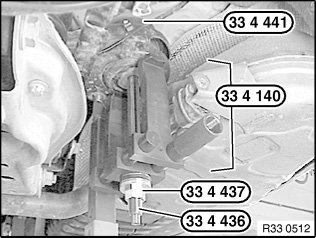
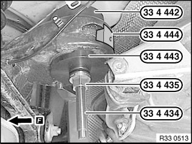

33 33 101 Replacing Two Rubber Mounts (Rear) For Rear Axle Carrier
33 33 101 Replacing two rubber mounts (rear) for rear axle carrierSpecial tools required:
Necessary preliminary tasks:
^ Lower rear axle support

If necessary, assemble special tool 33 4 140, 33 4 142 and 33 4 147 as shown.
If necessary, screw new thrust pieces 33 4 149 with countersunk screws on special tool 33 4 140.

Coat top edge of rubber mount with Circo Light (refer to BMW Parts Service).
Fit special tool 33 4 441 on rubber mount in such a way that edge of rubber mount disappears in special tool.
Oil special tool 33 4 436 slightly before use.
Align special tool 33 4 140 by way of openings in rubber mount.
Note:
Ensure it is correctly supported on bearing bushing of rear axle carrier.
Pull rubber mount with special tools 33 4 436, 33 4 437, 33 4 140 and 33 4 431 out of bearing bush.

Installation:
Coat new rubber mount with Circo Light (refer to BMW Parts Service).
Insert special tool 33 4 444 in opening on rear axle carrier to avoid damaging the rear axle carrier when drawing in the rubber mount.
Oil special tool 33 4 434 slightly before use.
If necessary, assemble special tool 33 4 442, 33 4 443, 33 4 435 and 33 4 434 as shown.
Align rubber mount by way of arrow to direction of travel.
Draw in rubber mount as far as it will go.
After installation:
^ Bleed braking system